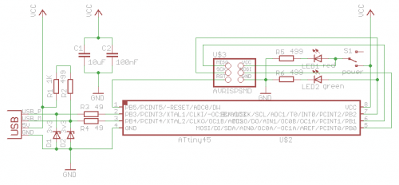
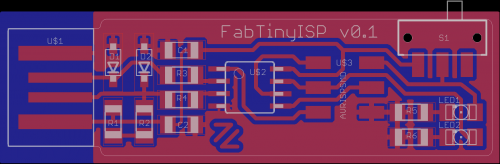

This basically started out as a 100% fab-able version of the vusbtiny programmer from simpleavr with a few minor additions, namely a switch and indicator-led for target-power and a led on the SCK line (just like a real arduino). It was inspired by David Mellis' FabISP and Andy Bardagjy's FabISPKey although it doesn't feature any solder jumpers or zero-ohm resistors ;). I used to call it FabTinyISP, but since it has so many other uses, I have decided to change the name to FabTiny* (aka. FabTinyStar) where the asterisks symbolises a wildcard denoting the endless possibilities. Or as Bas Withagen put it: a Fab-Tiny-Anything.

If you put an ATtiny85 on it instead, then you should be able to flash it with the Micronucleus bootloader and it will be almost completely compatible with the LittleWire and somewhat compatible with the the DigiSpark, however the USB lines are wired differently so their software needs to be recompiled after a simple, minor modification to reflect this difference. This is no longer needed from version 0.2 upwards.

And of course you can always write your own firmware for it with vusb, I found the following tutorials very useful to get started (especially the last part):
http://codeandlife.com/2012/01/22/avr-attiny-usb-tutorial-part-1/
http://codeandlife.com/2012/01/25/avr-attiny-usb-tutorial-part-2/
http://codeandlife.com/2012/01/29/avr-attiny-usb-tutorial-part-3/
http://codeandlife.com/2012/02/04/avr-attiny-usb-tutorial-part-4/
http://codeandlife.com/2012/02/22/v-usb-with-attiny45-attiny85-without-a...
And for troubleshooting see: http://vusb.wikidot.com/troubleshooting
TODO:
* Breakout USB pins as well. (done in version 0.1.1)
* Fix incorrect slide-switch footprint. (done in version 0.2 "BWE")
* Reverse D+ and D- for compatibility. (done in version 0.2 "BWE")
* Add a reset/user button. (done in version 0.3 "Bas")
* Running on 3.3 Volt. (done in version 0.3.3 "Dave")
Unless you need to be running at 3.3 volt, I recommend using the 5 volt version 0.3 (Bas).
You'll have to manually rename the files below to have an ".tar.bz2" extension before use.

This work is licensed under a Attribution Non-commercial Share Alike Creative Commons license